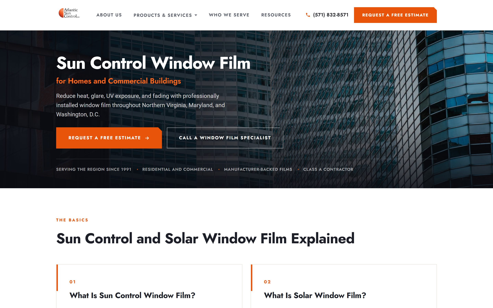
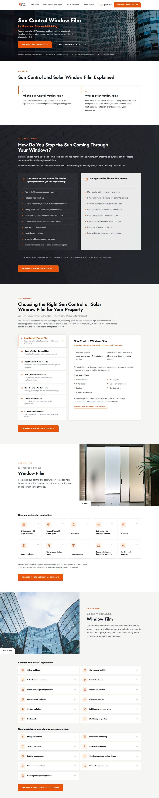
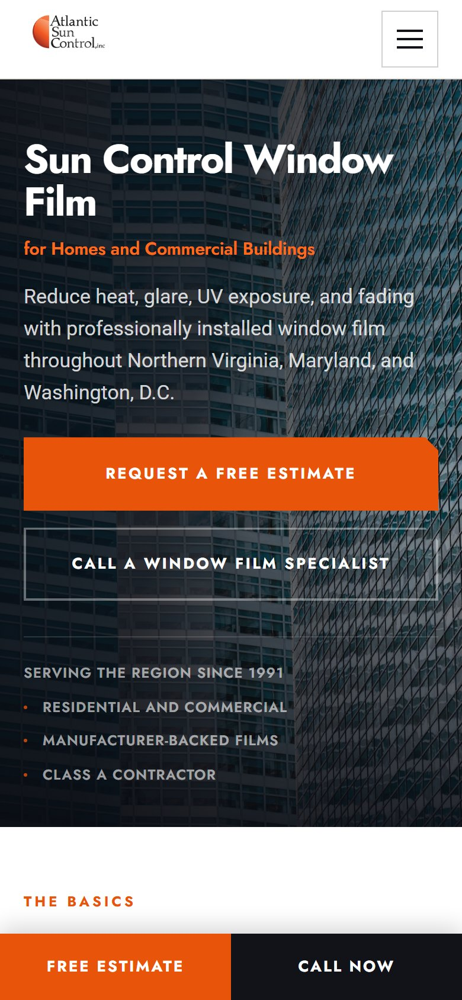
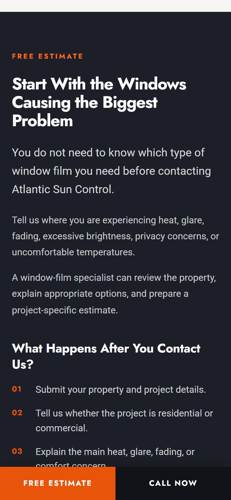

A conversion-first site for a window film contractor that has served Northern Virginia, Maryland and D.C. since 1991 — built to explain a considered purchase and turn it into an estimate request.


Hover to scroll the pageWindow film is a considered purchase. Homeowners and facility managers arrive with a problem — heat, glare, fading — and leave, if the site does its job, with an estimate request.
Atlantic Sun Control needed a page that explains the product plainly, separates residential work from commercial without making either audience hunt, and holds the call to action within reach at every scroll depth, on a phone, on a job site.
The page is built as a sequence of bands, each answering the next question a visitor has. The basics come first — what sun control film is, and what solar film is — then what the sun does to a building, then a comparison of the films that fix it. Residential and commercial each get a band of their own, with a photograph, a list of common applications and the same orange button.
Six of the fourteen, as they render on a desktop. Click any of them to see it full size.


Most of this traffic arrives on a phone, often from a search made standing in a hot room. The layout collapses to a single column, the comparison becomes a stack of cards, and a two-button bar — orange for the estimate, charcoal for the call — stays pinned to the bottom of the screen from the first band to the last.
A homepage that teaches before it asks, keeps three audiences on one page without confusing any of them, and puts the estimate request one tap away wherever the visitor stops reading. Two navigation variants were delivered so the client could choose between a full menu and a single-page scroll.
Visit the live siteA luxury real estate homepage for Northern Virginia's top-producing team.
View projectWhether you need a brand or a website that moves, our senior team handles it start to finish — all under one roof.
Get started today